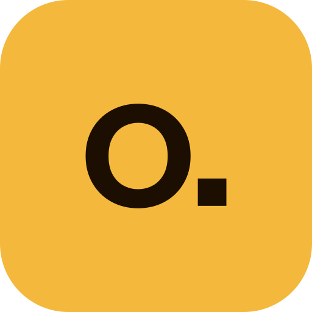
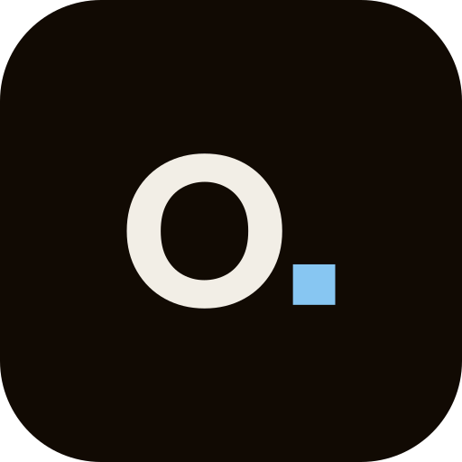
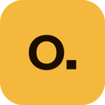
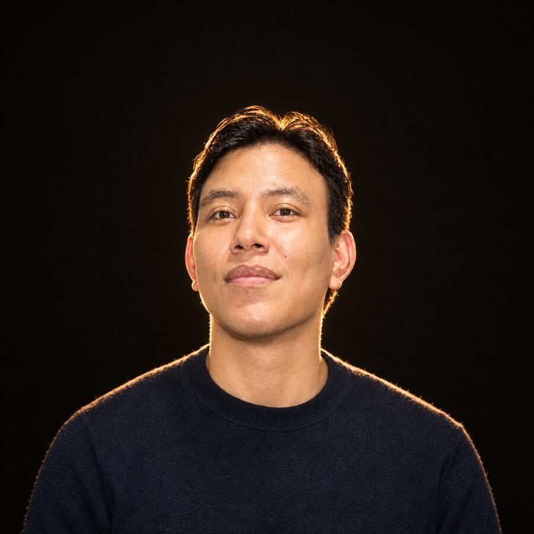
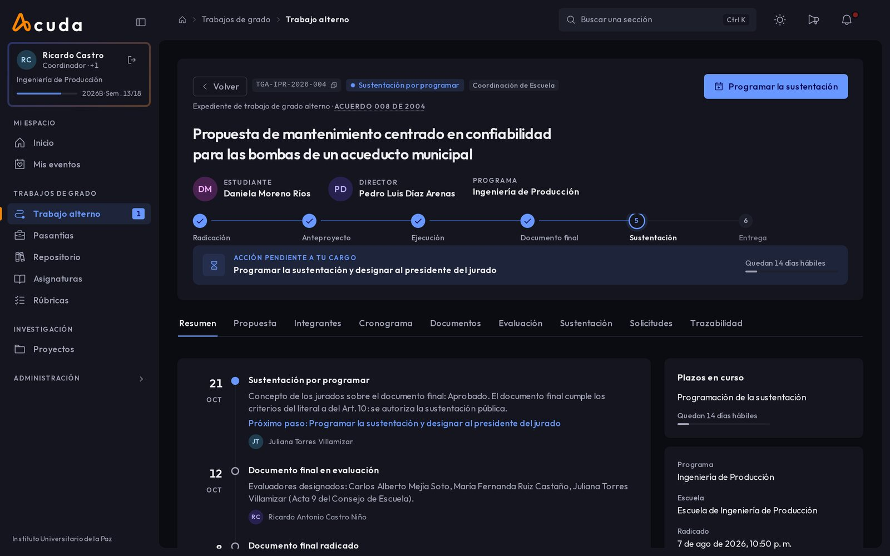

Tú en ámbar; la máquina en azul.
Manual de identidad de omaryesid.dev: marca, color, tipos, piezas y voz.
El logotipo y el monograma
Host Grotesk 500 en trazos: los archivos no dependen de la fuente.



- Área de respeto
- La altura de la o, alrededor de todo el logotipo.
- Tamaño mínimo
- 96 px el logotipo, 16 px el monograma.


Dos significados, nunca cruzados
Sobre un negro cálido, tomado del fondo de tu retrato.
Tú
--color-accentoklch(82% 0.15 82)#f4b93c
El botón principal, tu rol, el paso actual. Menos del 5% de la pantalla.
La máquina
--color-cooloklch(80% 0.09 240)#87c6f2
Fechas, versiones y lecturas: lo que escribió un sistema.
- Fondo profundo
- Fondo
- Panel
- Línea
- Apagado
- Tinta
Host Grotesk lee, la mono mide
Host Grotesk 400 y 500; Atkinson Hyperlegible Mono 400, solo para lo medido.
Automatizo lo que hoy es manual.
Lo que construí en UNIPAZ
ACUDA
Cada paso del trabajo de grado queda ligado a la norma que lo respalda.
abr 2026, nov 2023, ago 2023
Las piezas y la bitácora
Los controles, y tu historial como registro.
Chips
Campo
- Líder de desarrolloACUDA, desde cero en UNIPAZNext.js y NestJS, arquitectura hexagonal.
- Ingeniero de SistemasUniversidad del Magdalena
- DesarrolladorCrear ColombiaControl de calidad de laboratorio, con trazabilidad.
- IngenieroDAABONPrefacturación automática en zona franca.
3+
años construyendo software de punta a punta.
Tu retrato y tus pantallas reales
Un solo bisel para PC y celular, sin notch ni barra de navegador.


Escribe como una bitácora
| Así | No así |
|---|---|
| Automatizo lo que hoy es manual. | Soluciones integrales con inteligencia artificial. |
| ACUDA liga cada paso del trabajo de grado a su norma. | Una plataforma moderna para la gestión académica. |
| abr 2026, UNIPAZ, Barrancabermeja. | Recientemente, en una institución educativa. |
El valor, su unidad, la fecha y quién lo hizo.